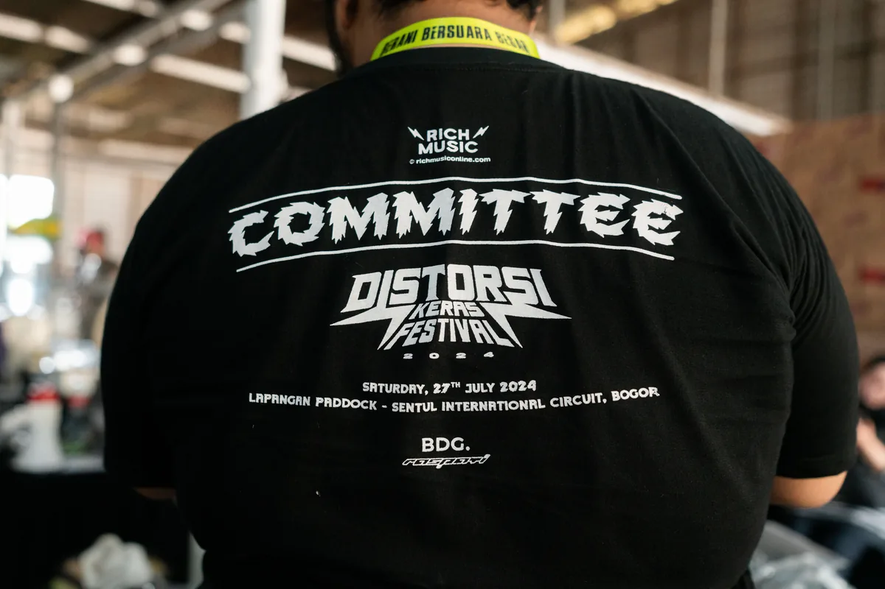
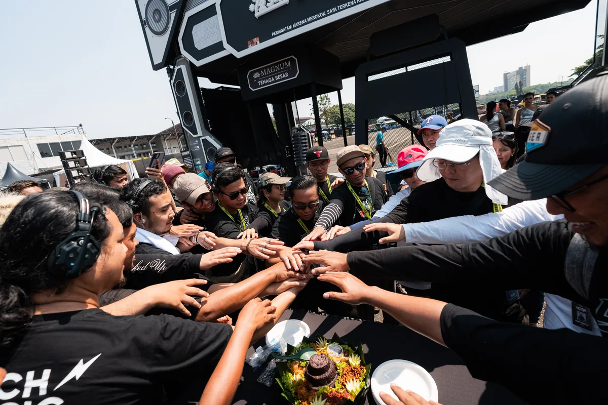
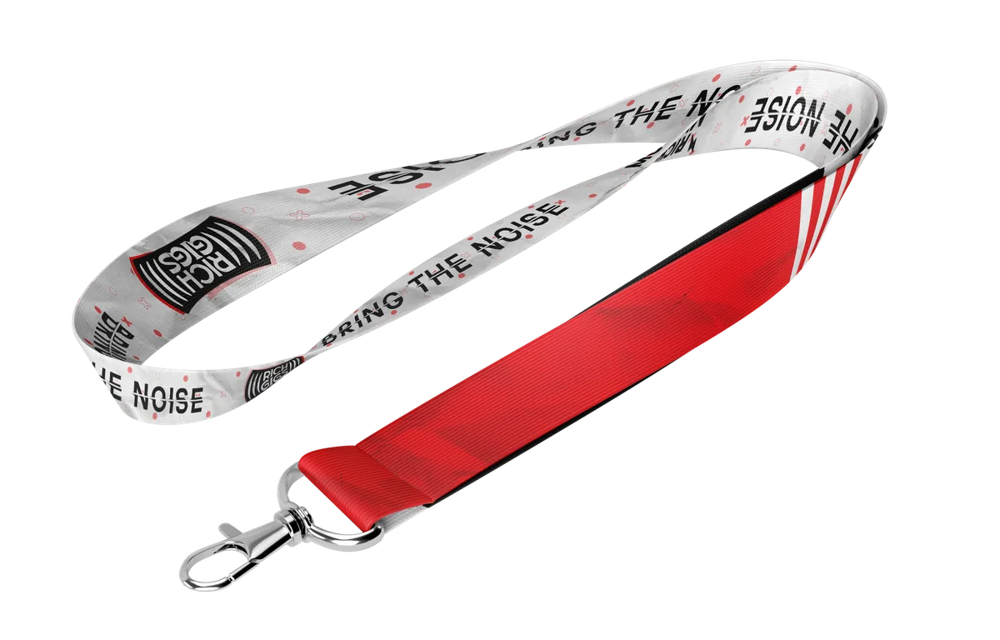
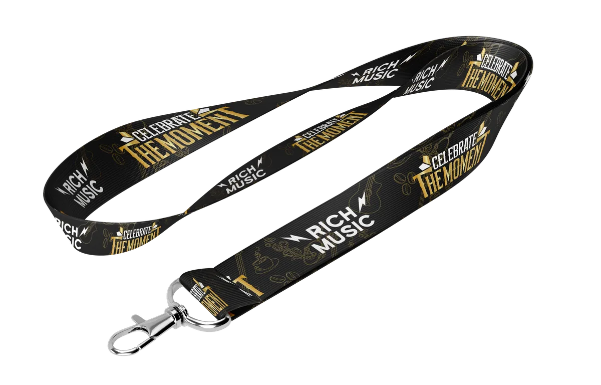
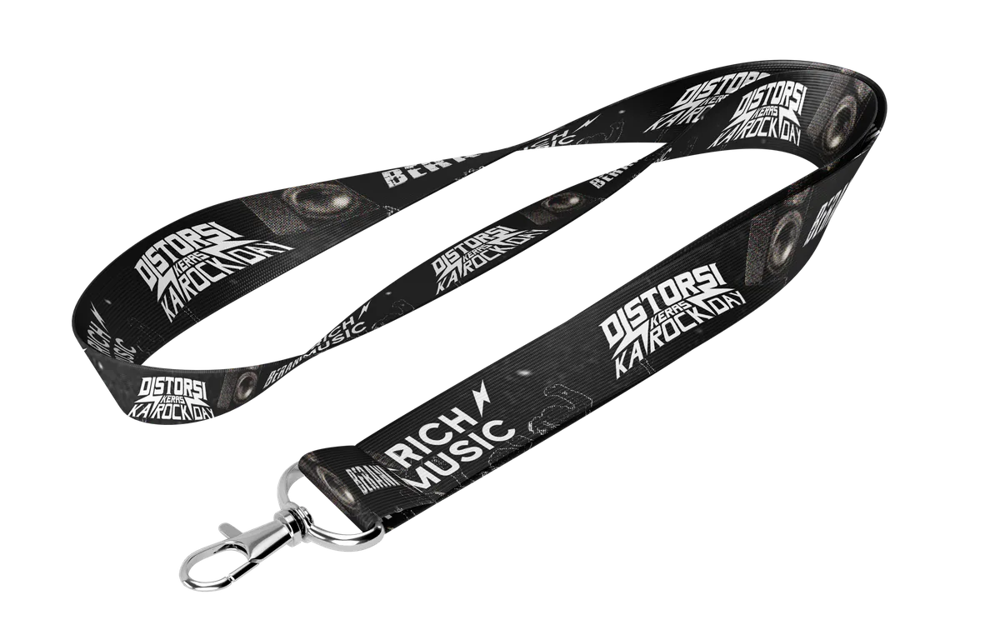

Event design and photography documentation for DistorsiKERAS 2024, an independent music festival. Work includes event collateral, lanyard design, and on-site photography coverage of the festival.
The Products





